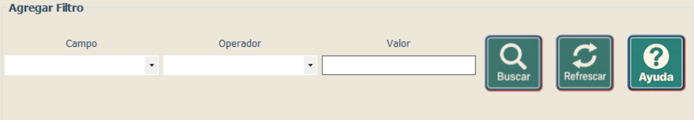

Capacitación - Consultas
Aplicación de condiciones a una consulta
Aplicación de condiciones a una consulta
Los filtros permiten limitar los resultados de acuerdo con un campo, un operador y un valor determinado. Cuando se utilicen varias condiciones, estas pueden relacionarse mediante operadores lógicos como AND u OR.
